Yokkaichi, Mie: things to do, food and stays
Yokkaichi · Mie
Yokkaichi
Highlighted on the Mie map.
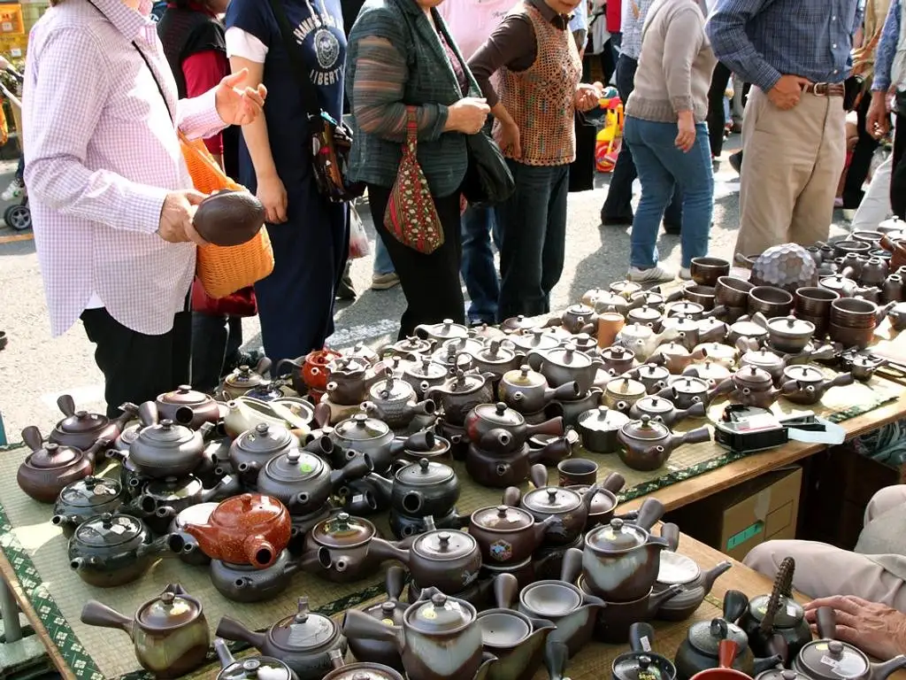
Stay
都ホテル 四日市
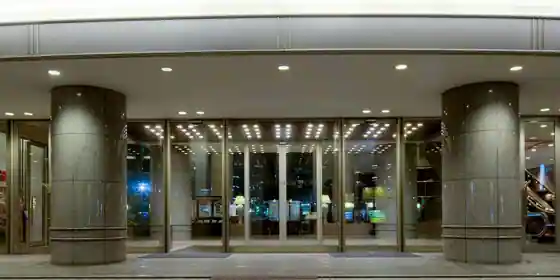
Miyako Hotel Yokkaichi
Hotel in Anshima, Yokkaichi with business travelers.
コンフォートホテル四日市
Comfort Hotel Yokkaichi
天然温泉 緋衣の湯 ドーミーイン四日市
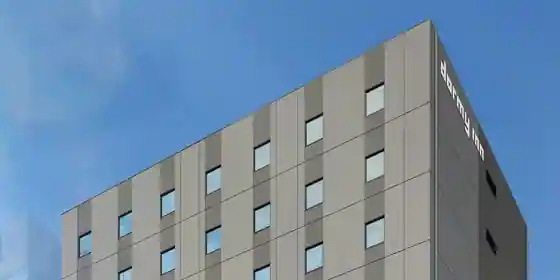
Tennen Onsen Akegoromo No Yu Dormy Inn Yokkaichi
Inn in Hamada, Yokkaichi with a sauna and a large communal bath; 6-minute walk from 3Gatsuopen!Kintetsuyokkaichi Station.
ホテルルートイン南四日市
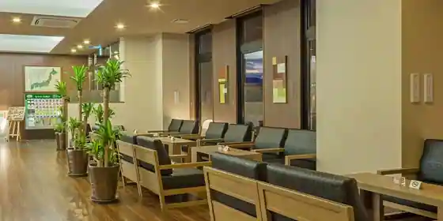
Hotel Route Inn Minami Yokkaichi
Hotel in Hinagahigashi, Yokkaichi with business travelers.
スーパーホテル四日市・国道１号沿 天然温泉 御在所岳の湯
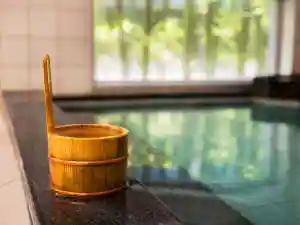
Super Hotel Yokkaichi Kokudo 1 Go En Tennen Onsen O Zaisho Gaku No Yu
Hotel in Hamada, Yokkaichi with breakfast available and parking.
大正館
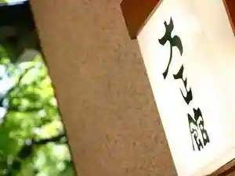
Taisho Kan
四日市シティホテルアネックス
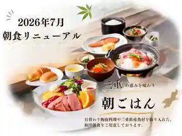
Yokkaichi City Hotel Anekkusu
Hotel in Hamada, Yokkaichi with breakfast available.
東横ＩＮＮ近鉄四日市駅北口
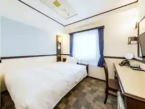
Toyoko INN Kintetsuyokkaichieki Kitaguchi
Inn at Nagashima Onsen in Suwasakae, Yokkaichi.
プラトンホテル四日市
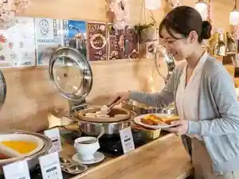
Puraton Hotel Yokkaichi
Hotel in Nishishinchi, Yokkaichi with breakfast available; 3-minute walk from Kintetsuyokkaichi Station.
四日市アーバンホテル
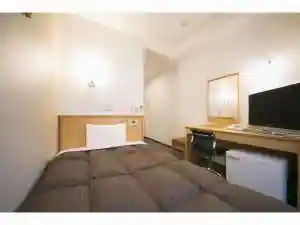
Yokkaichi Aban Hotel
Hotel in Suwasakae, Yokkaichi with business travelers.
ホテルリブマックス四日市駅前
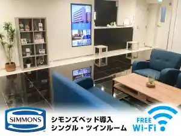
Hotel Ribumakkusu Yokkaichieki Mae
Hotel in Nishishinchi, Yokkaichi with business travelers; 2-minute walk from Kintetsuyokkaichi Station.
スーパーホテル近鉄四日市駅前禁煙館

Super Hotel Kintetsuyokkaichieki Mae Kin'En Kan
Hotel in Unomori, Yokkaichi with buffet meals and breakfast available.
Dining
Restaurant KAITO
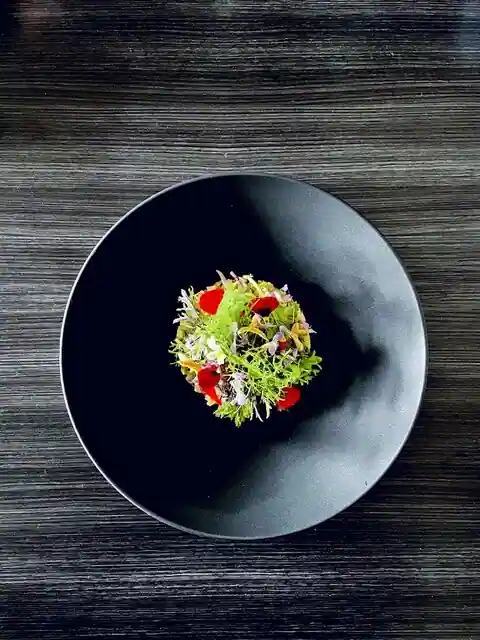
Restaurant KAITO
らーめん 鉢ノ葦葉
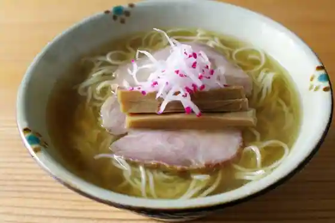
Ramen Hachi No Ashi Ha
割烹 西むら
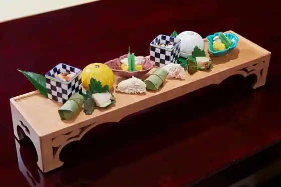
Kappo Nishi Mura
おき野
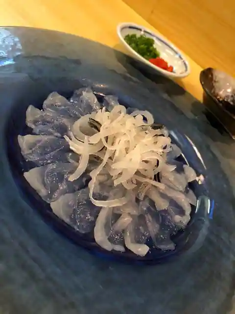
Oki No
麺屋 そにどり
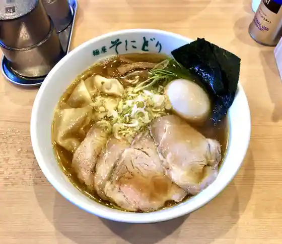
Men Ya Sonidori
スペインバル ボスケ
Supeinbaru Bosuke
栄太郎
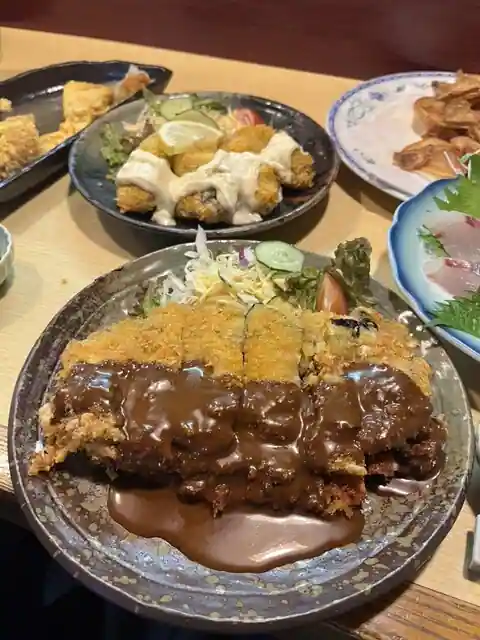
Eitaro
壮大家
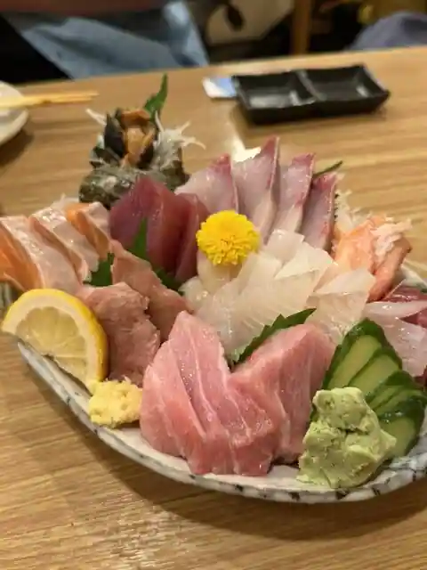
Sodai Ie
ドラゴン ショクドウ
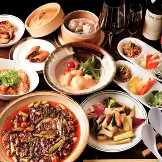
Doragon Shokudo
松阪牛たんど
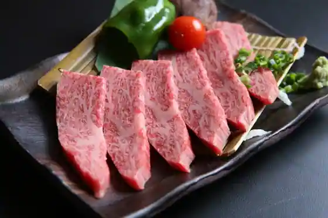
Matsusaka Ushi Tando
呼月
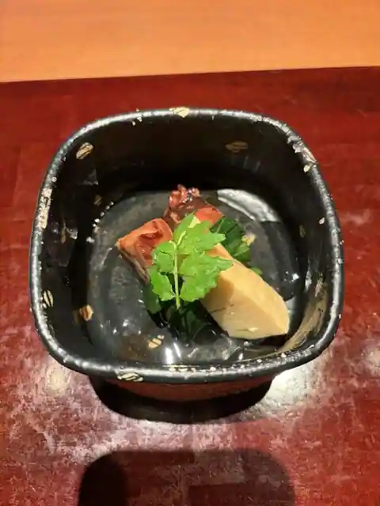
Ko Gatsu
てんぷら天英
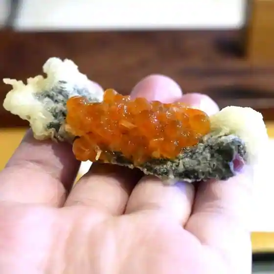
Tenpura Ei
泗水焼肉HAKU
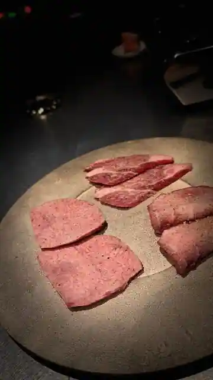
Shisui Yakiniku HAKU
炭焼うなぎ 喜多川
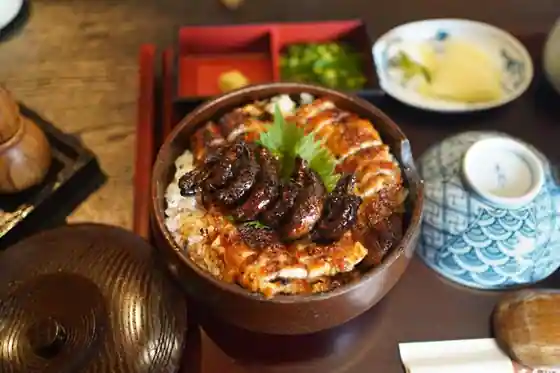
Sumiyaki Unagi Kitagawa
酒とごはんの羽場
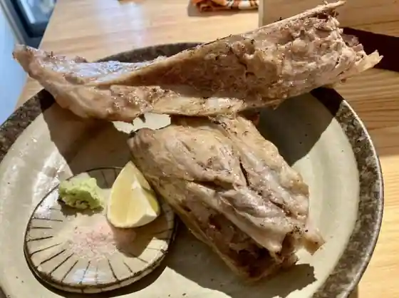
Sake Togohanno Haba
たかぎ
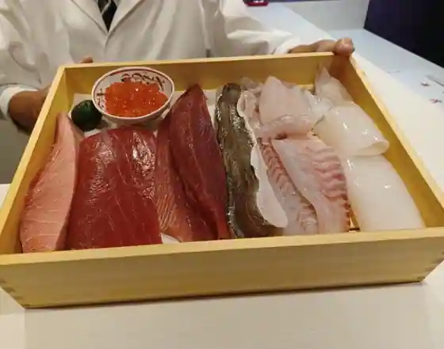
Takagi
タンブラン
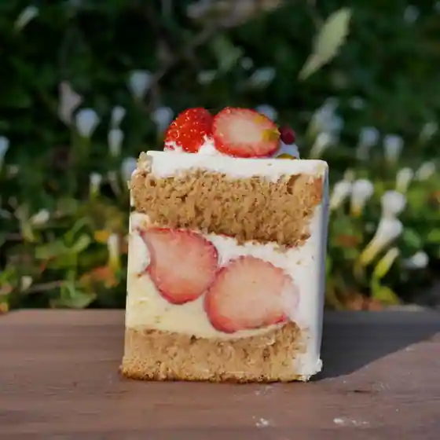
Tanburan
隆座
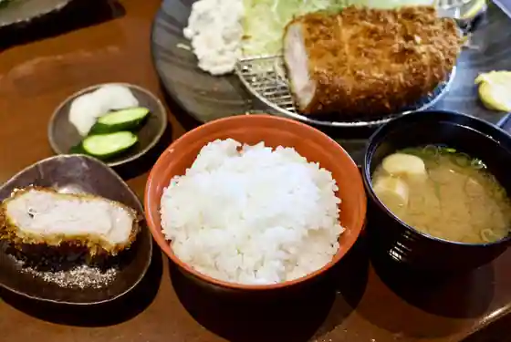
Takashi Za
骨付鳥かもん
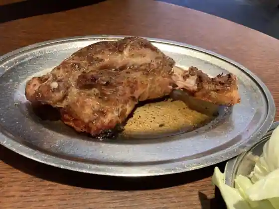
Hone Tsuki Tori Kamon
ヴィネリア ルッポロ
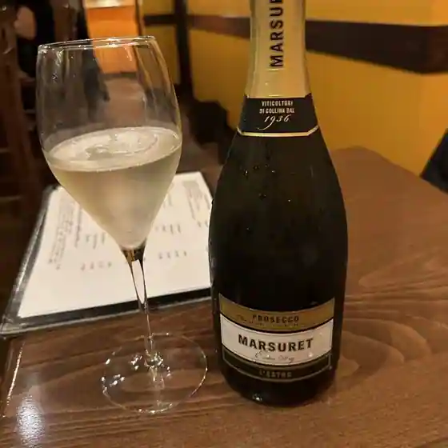
Vineria Rupporo
熊猫飯店
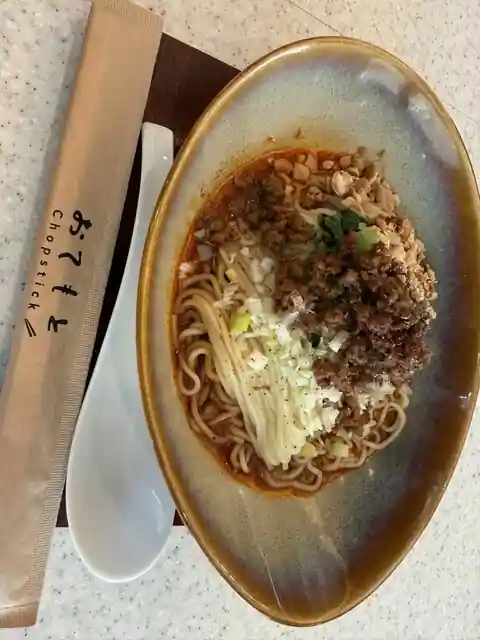
Kumaneko Meshi
中華そば 幸楽
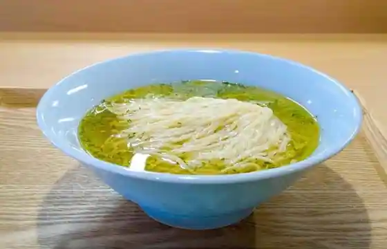
Chuka Soba Koraku
饗庭
Aeba
博多ラーメン なみへい
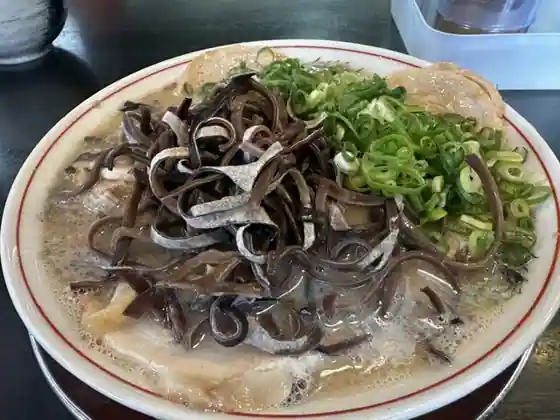
Hakata Ramen Namihei
Sights
Yokkaichi Culture Hall
Yokkaichi Bussan Kanko Horu
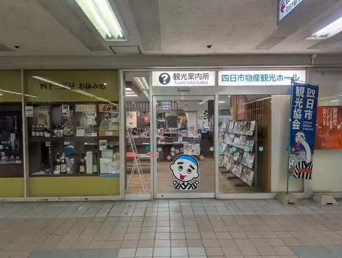
Yokkaichi Shonen Nature no Ie
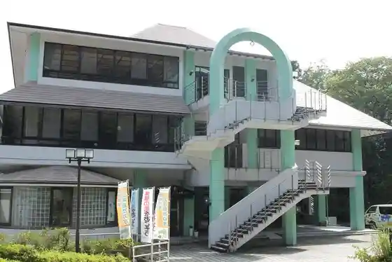
Oike Shotaku Shokubutsu Gunraku
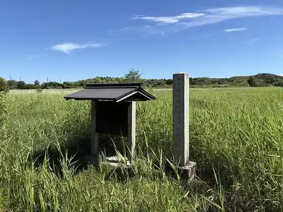
Rinko Hashi
Chuo Green Park
Yokkaichi Domu
Mitaki Tenisukoto
Yokkaichi Supotsu Land
Isewan Mariina
Kasumigaura Puru
Yokkaichi Onsen Ofuro café Yumori Za
Kabuse Cha Kafe
Ekokarentaka Yokkaichi
Yokkaichi Fureai Ranch
Kyu Shi Sato Village Hall (Shi Sato Local History Museum)
Naka Village Seisakusho Opunfakutorii Yokkaichi Fakutoriikafe
Nambu Kyuryo Park
Mizusawa Momiji Tani
Yokkaichi Minato Potobiru Viewpoint Tenjishitsu (Umiterasu 14)
Experience Gakushu Mie Cha Nogyo Kyodokumiai Yokkaichi Cha Gyo Shinko Center
Experience Gakushu Aji no Moto Tokai Kojo
Higashimeihan Jidoshado EXPASA O Zaisho Kudari
Higashimeihan Jidoshado EXPASA O Zaisho Nobori
Utsube Town Kado Museum
Sui Gatsu Kama Yama no Tobo
Yokkaichi Kantsurii Kurabu
Miya Tsuma Kyo Hyutte
Shi Sui Iori (Chashitsu)
Banko no Sato Hall (Togei Kyoshitsu)
Yokkaichi Ritsu Museum Yokkaichi Kogai to Kankyo Mirai Kan
Sui Saka Park Hane Tsuyama Ryokuchi
Isaka Damusaikuru Park
Kasumigaura Green Park
Yokkaichi Kombinato Yakei Kuruzu
Banko no Sato Hall
Banko Shrine
Denshichi Tei
Yokkaichi Minato Potobiru
Sangi Tetsudo Hokuseisen (Narogeji Keibintetsudo)
Tomi Su Gengyo Rui Kyodo Hambaijo
Yoshizaki Coast
Tsue Sho Saka
Hinaga no Oiwake
Miya Tsuma Kyo
Yokkaichi Kyuko Kowan Shisetsu
Suehiro Kyoryo (Kyu Yokkaichi Minato Eki Tetsudo Hashi)
Nishi A Kurakawa Ainashi Jisei Chi
Kawashima Town no Shidekobushi Gunraku
Toa Kurakawa Inunashi Jisei Chi
Kofu Kama (Kofugama)
Chishaku Yo Mizu
Unomori Shrine
Suwa Koen Koryu Kan
Kusunoki Chuo Ryokuchi